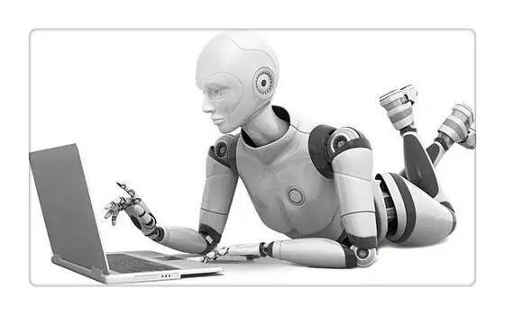

机器人编程常用的四大语言介绍

伴 随着机器人的发展，机器人语言也得到了发展和完善，机器人语言已经成为机器人技术的一个重要组成部分。机器人的功能除了依靠机器人的硬件支撑以外，相当一 部分是靠机器人语言来完成的。早期的机器人由于功能单一，动作简单，可采用固定程序或者示教方式来控制机器人的运动。随着机器人作业动作的多样化和作业环 境的复杂化，依靠固定的程序或示教方式已经满足不了要求，必须依靠能适应作业和环境随时变化的机器人语言编程来完成机器人工作。下面就来了解一下常见的机 器人编程语言吧！
VAL语言
一、VAL语言及特点
VAL语言是美国Unimation公司于1979年推出的一种机器人编程语言，主要配置在PUMA和UNIMATION等型机器人上，是一种专用的动作类描述语言。VAL语言是在BASIC语言的基础上发展起来的，所以与BASIC语言的结构很相似。在VAL的基础上Unimation公司推出了VALⅡ语言。
VAL语言可应用于上下两级计算机控制的机器人系统。上位机为LSI-11/23，编程在上位机中进行，上位机进行系统的管理；下位机为6503微处理器，主要控制各关节的实时运动。编程时可以VAL语言和6503汇编语言混合编程。
VAL语言命令简单、清晰易懂，描述机器人作业动作及与上位机的通信均较方便，实时功能强；可以在在线和离线两种状态下编程，适用于多种计算机控制的机器人;能够迅速地计算出不同坐标系下复杂运动的连续轨迹，能连续生成机器人的控制信号，可以与操作者交互地在线修改程序和生成程序；VAL语言包含有一些子程序库，通过调用各种不同的子程序可很快组合成复杂操作控制;能与外部存储器进行快速数据传输以保存程序和数据。
VAL语言系统包括文本编辑、系统命令和编程语言三个部分。
在文本编辑状态下可以通过键盘输入文本程序，也可通过示教盒在示教方式下输入程序。在输入过程中可修改、编辑、生成程序，最后保存到存储器中。在此状态下也可以调用已存在的程序。
系统命令包括位置定义、程序和数据列表、程序和数据存储、系统状态设置和控制、系统开关控制、系统诊断和修改。
编程语言把一条条程序语句转换执行。
二、VAL语言的指令
VAL语言包括监控指令和程序指令两种。其中监控指令有六类，分别为位置及姿态定义指令、程序编辑指令、列表指令、存储指令、控制程序执行指令和系统状态控制指令。各类指令的具体形式及功能如下：
1.监控指令
1)位置及姿态定义指令
POINT指令：执行终端位置、姿态的齐次变换或以关节位置表示的精确点位赋值。
其格式有两种：
POINT<变量>[=<变量2>…<变量n>]
或POINT<精确点>[=<精确点2>]
例如：
POINTPICK1=PICK2
指令的功能是置变量PICK1的值等于PICK2的值。
又如：
POINT#PARK
是准备定义或修改精确点PARK。
DPOINT指令：删除包括精确点或变量在内的任意数量的位置变量。
HERE指令：此指令使变量或精确点的值等于当前机器人的位置。
例如：
HEREPLACK
是定义变量PLACK等于当前机器人的位置。
WHERE指令：该指令用来显示机器人在直角坐标空间中的当前位置和关节变量值。
BASE指令：用来设置参考坐标系，系统规定参考系原点在关节1和2轴线的交点处，方向沿固定轴的方向。
格式：
BASE[]，[]，[]，[]
例如：
BASE300，–50，30
是重新定义基准坐标系的位置，它从初始位置向X方向移300，沿Z的负方向移50，再绕Z轴旋转了30°。
TOOLI指令：此指令的功能是对工具终端相对工具支承面的位置和姿态赋值。
2)程序编辑指令
EDIT指令：此指令允许用户建立或修改一个指定名字的程序，可以指定被编辑程序的起始行号。其格式为
EDIT[<程序名>]，[<行号>]
如果没有指定行号，则从程序的第一行开始编辑;如果没有指定程序名，则上次最后编辑的程序被响应。
用EDIT指令进入编辑状态后，可以用C、D、E、I、L、P、R、S、T等命令来进一步编辑。如：
C命令：改变编辑的程序，用一个新的程序代替。
D命令：删除从当前行算起的n行程序，n缺省时为删除当前行。
E命令：退出编辑返回监控模式。
I命令：将当前指令下移一行，以便插入一条指令。
P命令：显示从当前行往下n行的程序文本内容。
T命令：初始化关节插值程序示教模式，在该模式下，按一次示教盒上的“RECODE”按钮就将MOVE指令插到程序中。
3)列表指令
DIRECTORY指令：此指令的功能是显示存储器中的全部用户程序名。
LISTL指令：功能是显示任意个位置变量值。
LISTP指令：功能是显示任意个用户的全部程序。
4)存储指令
FORMAT指令：执行磁盘格式化。
STOREP指令：功能是在指定的磁盘文件内存储指定的程序。
STOREL指令：此指令存储用户程序中注明的全部位置变量名和变量值。
LISTF指令：指令的功能是显示软盘中当前输入的文件目录。
LOADP指令：功能是将文件中的程序送入内存。
LOADL指令：功能是将文件中指定的位置变量送入系统内存。
DELETE指令：此指令撤销磁盘中指定的文件。
COMPRESS指令：只用来压缩磁盘空间。
ERASE指令：擦除磁内容并初始化。
5)控制程序执行指令
ABORT指令：执行此指令后紧急停止(紧停)。
DO指令：执行单步指令。
EXECUTE指令：此指令执行用户指定的程序n次，n可以从–32768到32767，当n被省略时，程序执行一次。
NEXT指令：此命令控制程序在单步方式下执行。
PROCEED指令：此指令实现在某一步暂停、急停或运行错误后，自下一步起继续执行程序。
RETRY指令：指令的功能是在某一步出现运行错误后，仍自那一步重新运行程序。
SPEED指令：指令的功能是指定程序控制下机器人的运动速度，其值从0.01到327.67，一般正常速度为100。
6)系统状态控制指令
CALIB指令：此指令校准关节位置传感器。
STATUS指令：用来显示用户程序的状态。
FREE指令：用来显示当前未使用的存储容量。
ENABL指令：用于开、关系统硬件。
ZERO指令：此指令的功能是清除全部用户程序和定义的位置，重新初始化。
DONE：此指令停止监控程序，进入硬件调试状态。
2.程序指令
1)运动指令
指令包括GO、MOVE、MOVEI、MOVES、DRAW、APPRO、APPROS、DEPART、DRIVE、READY、OPEN、OPENI、CLOSE、CLOSEI、RELAX、GRASP及DELAY等。
这些指令大部分具有使机器人按照特定的方式从一个位姿运动到另一个位姿的功能，部分指令表示机器人手爪的开合。例如：
MOVE#PICK!
表示机器人由关节插值运动到精确PICK所定义的位置。“!”表示位置变量已有自己的值。
MOVET<位置>，<手开度>
功能是生成关节插值运动使机器人到达位置变量所给定的位姿，运动中若手为伺服控制，则手由闭合改变到手开度变量给定的值。
又例如：
OPEN[<手开度>]
表示使机器人手爪打开到指定的开度。
2)机器人位姿控制指令
这些指令包括RIGHTY、LEFTY、ABOVE、BELOW、FLIP及NOFLIP等。
3)赋值指令
赋值指令有SETI、TYPEI、HERE、SET、SHIFT、TOOL、INVERSE及FRAME。
4)控制指令
控制指令有GOTO、GOSUB、RETURN、IF、IFSIG、REACT、REACTI、IGNORE、SIGNAL、WAIT、PAUSE及STOP。
其中GOTO、GOSUB实现程序的无条件转移，而IF指令执行有条件转移。IF指令的格式为
IF<整型变量1><关系式><整型变量2><关系式>THEN<标识符>
该指令比较两个整型变量的值，如果关系状态为真，程序转到标识符指定的行去执行，否则接着下一行执行。关系表达式有EQ(等于)、NE(不等于)、LT(小于)、GT(大于)、LE(小于或等于)及GE(大于或等于)。
5)开关量赋值指令
指令包括SPEED、COARSE、FINE、NONULL、NULL、INTOFF及INTON。
6)其他指令
其他指令包括REMARK及TYPE。
SIGLA语言
SIGLA是一种仅用于直角坐标式SIGMA装配型机器人运动控制时的一种编程语言，是20世纪70年代后期由意大利Olivetti公司研制的一种简单的非文本语言。
这种语言主要用于装配任务的控制，它可以把装配任务划分为一些装配子任务，如取旋具，在螺钉上料器上取螺钉A，搬运螺钉A，定位螺钉A，装入螺钉A，紧固螺钉等。编程时预先编制子程序，然后用子程序调用的方式来完成。

IML语言
IML也是一种着眼于末端执行器的动作级语言，由日本九州大学开发而成。IML语言的特点是编程简单，能人机对话，适合于现场操作，许多复杂动作可由简单的指令来实现，易被操作者掌握。
IML用直角坐标系描述机器人和目标物的位置和姿态。坐标系分两种，一种是机座坐标系，一种是固连在机器人作业空间上的工作坐标系。语言以指令形式编程，可以表示机器人的工作点、运动轨迹、目标物的位置及姿态等信息，从而可以直接编程。往返作业可不用循环语句描述，示教的轨迹能定义成指令插到语句中，还能完成某些力的施加。
IML语言的主要指令有：运动指令MOVE、速度指令SPEED、停止指令STOP、手指开合指令OPEN及CLOSE、坐标系定义指令COORD、轨迹定义命令TRAJ、位置定义命令HERE、程序控制指令IF…THEN、FOREACH语句、CASE语句及DEFINE等。
AL语言
一、AL语言概述
AL语言是20世纪70年代中期美国斯坦福大学人工智能研究所开发研制的一种机器人语言，它是在WAVE的基础上开发出来的，也是一种动作级编程语言，但兼有对象级编程语言的某些特征，使用于装配作业。它的结构及特点类似于PASCAL语言，可以编译成机器语言在实时控制机上运行，具有实时编译语言的结构和特征，如可以同步操作、条件操作等。AL语言设计的原始目的是用于具有传感器信息反馈的多台机器人或机械手的并行或协调控制编程。
运行VA语言的系统硬件环境包括主、从两级计算机控制，如图所示。主机为PDP-10，主机内的管理器负责管理协调各部分的工作，编译器负责对AL语言的指令进行编译并检查程序，实时接口负责主、从机之间的接口连接，装载器负责分配程序。从机为PDP-11/45。
主机的功能是对AL语言进行编译，对机器人的动作进行规划；从机接受主机发出的动作规划命令，进行轨迹及关节参数的实时计算，最后对机器人发出具体的动作指令。
二、AL语言的编程格式
(1)程序BEGIN开始，由END结束。
(2)语句与语句之间用分号隔开。
(3)变量先定义说明其类型，后使用。变量名以英文字母开头，由字母、数字和下画线组成，字母大、小写不分。
(4)程序的注释用大括号括起来。
(5)变量赋值语句中如所赋的内容为表达式，则先计算表达式的值，再把该值赋给等式左边的变量。
三、AL语言中数据的类型
(1)标量(scalar)——可以是时间、距离、角度及力等，可以进行加、减、乘、除和指数运算，也可以进行三角函数、自然对数和指数换算。
(2)向量(vector)——与数学中的向量类似，可以由若干个量纲相同的标量来构造一个向量。
(3)旋转(rot)——用来描述一个轴的旋转或绕某个轴的旋转以表示姿态。用ROT变量表示旋转变量时带有两个参数，一个代表旋转轴的简单矢量，另一个表示旋转角度。
(4)坐标系(frame)——用来建立坐标系，变量的值表示物体固连坐标系与空间作业的参考坐标系之间的相对位置与姿态。
(5)变换(trans)——用来进行坐标变换，具有旋转和向量两个参数，执行时先旋转再平移。
四、AL语言的语句介绍
1.MOVE语句
用来描述机器人手爪的运动，如手爪从一个位置运动到另一个位置。MOVE语句的格式为
MOVETO<目的地>
2.手爪控制语句
OPEN：手爪打开语句。
CLOSE：手爪闭合语句。
语句的格式为
OPENTO
CLOSETO
其中SVAL为开度距离值，在程序中已预先指定。
3.控制语句
与PASCAL语言类似，控制语句有下面几种：
IF<条件>THEN<语句>ELSE<语句>
WHILE<条件>DO<语句>
CASE<语句>
DO<语句>UNTIL<条件>
FOR…STEP…UNTIL…
4.AFFIX和UNFIX语句
在装配过程中经常出现将一个物体粘到另一个物体上或一个物体从另一个物体上剥离的操作。语句AFFIX为两物体结合的操作，语句AFFIX为两物体分离的操作。
例如：BEAM_BORE和BEAM分别为两个坐标系，执行语句
AFFIXBEAM_BORETOBEAM
后两个坐标系就附着在一起了，即一个坐标系的运动也将引起另一个坐标系的同样运动。然后执行下面的语句
UNFIXBEAM_BOREFROMBEAM
两坐标系的附着关系被解除。
5.力觉的处理
在MOVE语句中使用条件监控子语句可实现使用传感器信息来完成一定的动作。
监控子语句如：
ON<条件>DO<动作>
例如：
MOVEBARMTO⊕-0.1*INCHESONFORCE(Z)>10*OUNCESDOSTOP
表示在当前位置沿Z轴向下移动0.1英寸，如果感觉Z轴方向的力超过10盎司，则立即命令机械手停止运动。
信息部 张凤乔